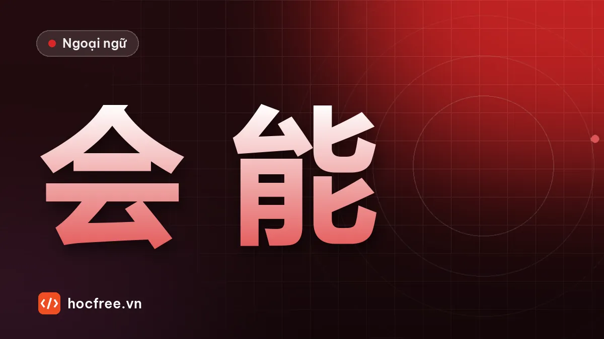

想, 要, 会, 能, 可以: muốn, cần, biết, có thể khác nhau thế nào
Phân biệt 想 và 要 khi nói mong muốn, 会 – 能 – 可以 khi nói khả năng và sự cho phép, cách phủ định từng từ và bảng so sánh dễ nhớ.

Học xong bài này, bạn sẽ
- Phân biệt 想 và 要
- Phân biệt 会, 能, 可以
- Phủ định đúng từng động từ năng nguyện
Nên học trước: Trật tự câu: ai – khi nào – ở đâu – làm gì
Nội dung bài viết
"Tôi muốn nghỉ", "Bạn biết lái xe không?", "Ở đây có được hút thuốc không?". Những câu này cần động từ năng nguyện: các từ đứng trước động từ chính để nói mong muốn, khả năng, sự cho phép. Tiếng Việt dùng "muốn, biết, có thể, được" khá thoải mái; tiếng Trung chia rõ hơn, và chọn sai là câu nghe rất lạ.
Từ vựng
| Chữ Hán | Pinyin | Nghĩa | Ví dụ |
|---|---|---|---|
| 想 | xiǎng | muốn (mong muốn); nghĩ; nhớ | 我想喝水。 |
| 要 | yào | muốn (dứt khoát); cần; sắp, sẽ | 我要一杯咖啡。 |
| 会 | huì | biết (kỹ năng học được); sẽ (dự đoán) | 我会说汉语。 |
| 能 | néng | có thể (năng lực, điều kiện) | 明天我能来。 |
| 可以 | kěyǐ | được phép; có thể | 我可以进来吗？ |
| 不用 | búyòng | không cần | 不用谢。 |
| 说 | shuō | nói | 说汉语 |
| 英语 | Yīngyǔ | tiếng Anh | 他会说英语。 |
| 写 | xiě | viết | 我会写汉字。 |
| 开车 | kāichē | lái xe | 你会开车吗？ |
| 游泳 | yóuyǒng | bơi | 我不会游泳。 |
| 休息 | xiūxi | nghỉ ngơi | 我想休息一下。 |
| 买 | mǎi | mua | 我要买手机。 |
| 帮 | bāng | giúp | 你能帮我吗？ |
| 进来 | jìnlai | vào (trong này) | 请进来。 |
| 抽烟 | chōuyān | hút thuốc | 这儿不能抽烟。 |
| 停车 | tíngchē | đỗ xe | 这儿可以停车吗？ |
| 喝酒 | hē jiǔ | uống rượu bia | 我今天不能喝酒。 |
Phát âm
- 想 xiǎng (muốn) và 像 xiàng (giống), 向 xiàng: chỉ khác thanh. Nhớ 想 thanh 3 thấp.
- 可以 kěyǐ đọc kéyǐ (3 + 3). 我可以 ba thanh 3 liền: thường đọc wǒ kéyǐ hoặc wó kéyǐ.
- 会 huì: h gần "kh", vần uei viết ui. Đừng đọc thành "hội".
Ngữ pháp
Vị trí chung
Chủ ngữ + (thời gian) + động từ năng nguyện + động từ chính + tân ngữ. Động từ năng nguyện đứng trước cụm 在/跟: 我想在家休息。 (Tôi muốn nghỉ ở nhà.)
1. 想 và 要: muốn
| 想 | 要 | |
|---|---|---|
| Sắc thái | Mong muốn, nhẹ nhàng, lịch sự | Ý định rõ ràng, dứt khoát; gọi món, mua hàng |
| Ví dụ | 我想去中国。 Tôi muốn đi Trung Quốc. | 我要去中国。 Tôi sẽ / nhất định đi Trung Quốc. |
| Phủ định "không muốn" | 不想 cho cả hai. 不要 nghĩa là "đừng": 不要抽烟！(Đừng hút thuốc!) | |
要 còn nghĩa "cần": 明天要上班吗？ (Mai có phải đi làm không?) Phủ định "không cần" là 不用: 明天不用上班。
2. 会, 能, 可以: có thể
| Từ | Nghĩa chính | Ví dụ |
|---|---|---|
| 会 | Biết làm vì đã học | 我会开车。 Tôi biết lái xe. |
| 能 | Có khả năng / điều kiện làm (sức khỏe, thời gian, hoàn cảnh) | 我今天喝酒了，不能开车。 Hôm nay tôi uống rượu rồi, không lái xe được. |
| 可以 | Được phép | 这儿可以停车吗？ Ở đây có được đỗ xe không? |
Một câu phân biệt cả ba: 我会游泳，可是今天感冒了，不能游泳。医生说下个星期可以游泳。 (Tôi biết bơi, nhưng hôm nay bị cảm, không bơi được. Bác sĩ nói tuần sau mới được bơi.)
Từ mới: 感冒 gǎnmào (bị cảm), 下个星期 xià gè xīngqī (tuần sau), 当然 dāngrán (tất nhiên), 不行 bù xíng (không được).
3. Hỏi và trả lời
- 你会说汉语吗？ → 会一点儿。 / 不会。
- 我可以用你的电脑吗？ → 可以。 / 不行。 (Từ chối lịch sự hơn: 对不起，现在不行。)
- 你能帮我吗？ → 能。 / 当然可以！ (Tất nhiên rồi!)
Phủ định của "được phép" thường dùng 不能 (không được) hơn là 不可以 (cấm, nghe nặng hơn): 这儿不能抽烟。
会 còn nghĩa "sẽ" khi dự đoán: 明天会下雨吗？ (Mai có mưa không?) Bạn sẽ gặp nhiều ở HSK 2.
Hội thoại: xin phép ở công ty
A: 经理，我可以进来吗？
Jīnglǐ, wǒ kěyǐ jìnlai ma?
Giám đốc, em vào được không ạ?
B: 可以，请进。有什么事？
Kěyǐ, qǐng jìn. Yǒu shénme shì?
Được, mời vào. Có việc gì thế?
A: 我想明天休息一天，可以吗？
Wǒ xiǎng míngtiān xiūxi yì tiān, kěyǐ ma?
Em muốn nghỉ một ngày vào ngày mai, được không ạ?
B: 明天要开会，你能不能星期五休息？
Míngtiān yào kāihuì, nǐ néng bu néng xīngqīwǔ xiūxi?
Mai phải họp, em nghỉ thứ Sáu được không?
A: 能。谢谢经理！
Néng. Xièxie jīnglǐ!
Được ạ. Cảm ơn giám đốc!
Từ mới: 事 shì (việc), 请进 qǐng jìn (mời vào). 能不能 là câu hỏi chính phản của 能.
Luyện tập
Bài 1. Điền 想 / 要 / 会 / 能 / 可以 (có câu nhiều đáp án): (1) 我___说一点儿汉语。 (2) 服务员，我___一杯茶。 (3) 这儿___抽烟吗？ (4) 我太累了，___休息。 (5) 他病了，今天不___来上班。 (6) 你___开车吗？我教你。 (7) 我___用一下你的手机吗？ (8) 明天你___来公司吗？我们有会。
Bài 2. Phủ định đúng: (1) 我想去。 (2) 明天要上班。 (3) 我会游泳。 (4) 这儿可以停车。
Xem đáp án
Bài 1. (1) 会 (2) 要 (3) 可以 (hoặc 能) (4) 想 (hoặc 要) (5) 能 (6) 会 (7) 可以 (hoặc 能) (8) 能 (hỏi điều kiện) hoặc 要 (hỏi có phải đến không).
Bài 2. (1) 我不想去。 (2) 明天不用上班。 (3) 我不会游泳。 (4) 这儿不能停车。
服务员 fúwùyuán: nhân viên phục vụ. 病了 bìng le: bị ốm. 教 jiāo: dạy.
Kiểm tra cuối bài
1. "Tôi không muốn đi" nói 我不要去 hay 我不想去?
2. "Tôi biết bơi" dùng 会 hay 能? Vì sao?
3. Phủ định của 要 (cần) là gì?
Xem đáp án
- 我不想去。(不要 nghĩa là "đừng".)
- 会, vì bơi là kỹ năng học được.
- 不用.
Tổng kết và ôn tập
- 想 muốn nhẹ, 要 muốn dứt khoát / cần; phủ định 不想, 不用.
- 会 biết (học được), 能 có khả năng / điều kiện, 可以 được phép.
- Động từ năng nguyện đứng trước cụm 在, 跟 và động từ chính.
Bài ôn: viết 5 câu về việc bạn biết làm, muốn làm, có thể làm tuần này. Bài tiếp theo: mua sắm, tiền và lượng từ.
Bài tập thực hành
- Điền 想/要/会/能/可以 vào 12 câu trong phần luyện tập, giải thích lựa chọn.
- Viết 5 câu về những việc bạn biết làm, muốn làm và có thể làm tuần này.
Làm xong bài tập mới chuyển sang bài tiếp theo: đọc to, tự viết chữ Hán và tự chấm đáp án là cách duy nhất để nhớ lâu.